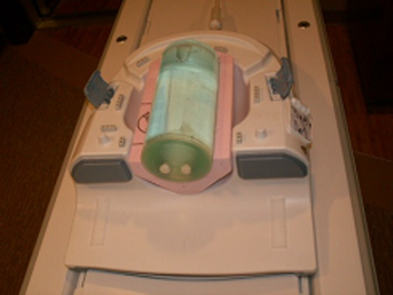
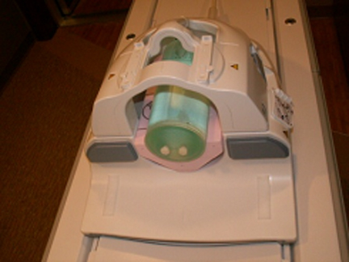
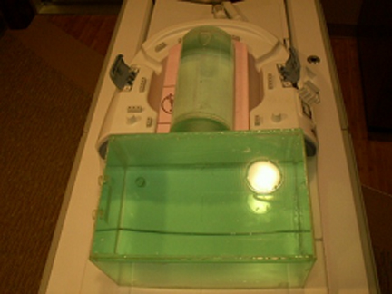
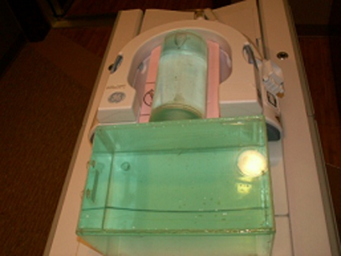
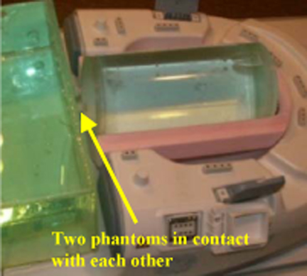
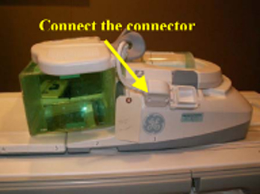
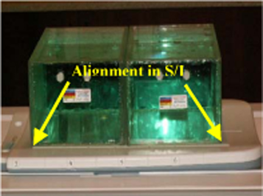
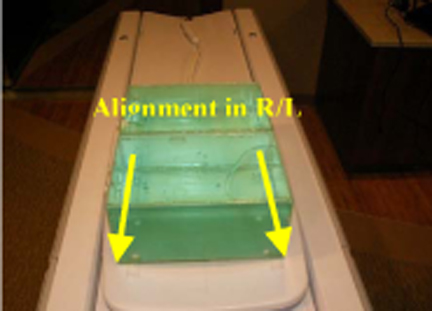
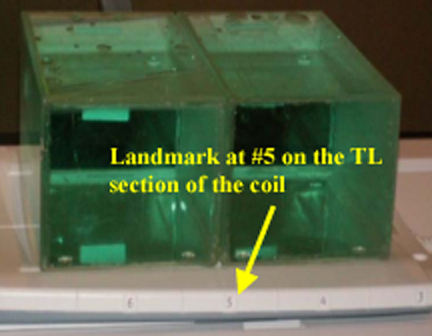

Operating Documentation
Direction 5670000, Rev# 1
Optima MR450w 1.5T Service Methods
Module Version 5.0, Version Date 10/13/09
Operating Documentation |
| Required Persons | Procedure |
| 1 | 30 |
Follow this process to prepare for the MCQA test.
| NOTE: | The coil consists of five units: Posterior Head, Face, Chest, Horseshoe, and TL. This is done to ensure modularity in design and diagnostics. The MCQA test for the coil is conducted to three configurations: TL unit only, Posterior Head Chest Horseshoe TL, and Posterior Head Face. |
| NOTE: | Coils do not ship with phantoms. Phantoms come in a unified phantom set with the MR system. |
No special tools or test equipment required.
No special safety requirement.
The appropriate coil configuration file must be installed to run this tool.
Place Posterior Head Face section on the table as shown in Illustration 1.
Illustration 1: Positioning the Posterior Head Face Section

Place HNS positioner and then place large cylindrical unified phantom on the positioner as shown in Illustration 2.
Illustration 2: Positioner and Large Cylindrical Unified Phantom

Carefully align the face component part of the coil with the connector pins over this posterior head face section and latch both the coil sections into place as shown in Illustration 3. (The scanner will not operate if the coil sections are not latched correctly.)
Illustration 3: Aligning Coil with Connector Pins

Connect the coil to the system LPCA.
Landmark the coil on the markings present on the face component indicated through arrows as shown in Illustration 4 and press [advance to scan].
Illustration 4: Landmarking the Coil

Perform the Multi-Coil Quality Assurance Tool test.
Place the Posterior Head Face section and TL section of the coil on table as shown in Illustration 5 and Illustration 6.
Illustration 5: Positioning the Posterior Head Face Section
Illustration 6: Positioner and Large Cylindrical Unified Phantom
Place the TL unified phantom over the junction of the TL section and head components and carefully latch the horseshoe part of the face component into the connectors as shown in Illustration 7. The complete setup is shown in figure 1.13-6.
Illustration 7: Latching Face Component to Connectors

Illustration 8: Complete Setup

Ensure that TL unified phantom is in contact with the cylindrical unified phantom as shown in Illustration 9.
Illustration 9: TL Unified Phantom in Contact with Cylindrical Unified Phantom

Connect the chest part to the posterior head section as shown in Illustration 10.
Illustration 10: Connecting Chest Part to Positioner Head

Landmark on the markings over the chest section of the coil as indicated in Illustration 11.
Illustration 11: Landmarking Coil
Press [advance to scan].
Perform the Multi-Coil Quality Assurance Tool test.
Place the TL section of the HNS coil on the table as shown in Illustration 12.
Illustration 12: Positioning TL Section

Place TL unified phantoms on the TL section of the coil as shown in Illustration 13.
Illustration 13: Positioning Phantom on Coil

Align the TL unified phantoms properly in S/I direction and R/L direction of the TL section of the coil as shown in Illustration 14.
Illustration 14: Aligning the Unified Phantoms

Connect the coil to Port A of system LPCA.
Landmark on #5 present on the side of the TL section of the coil as shown in Illustration 15 and press [advance to scan].
Illustration 15: Landmarking Coil

Perform the Multi-Coil Quality Assurance Tool test.